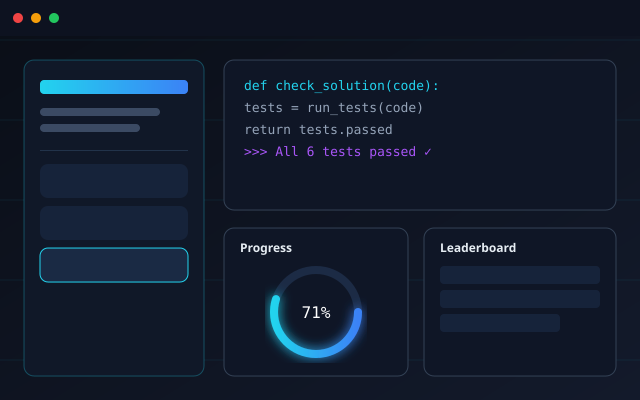
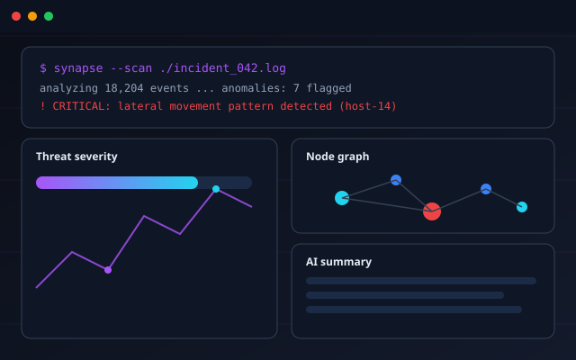
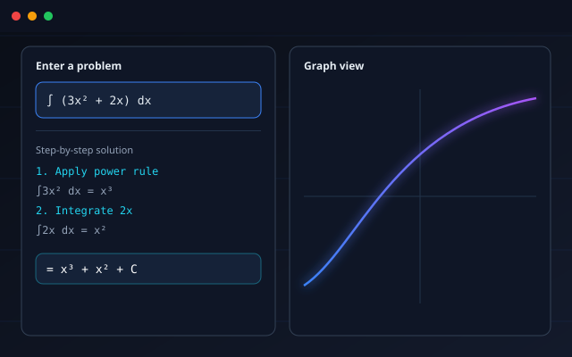
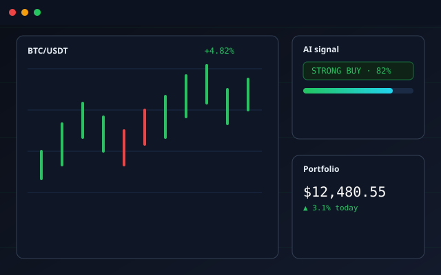
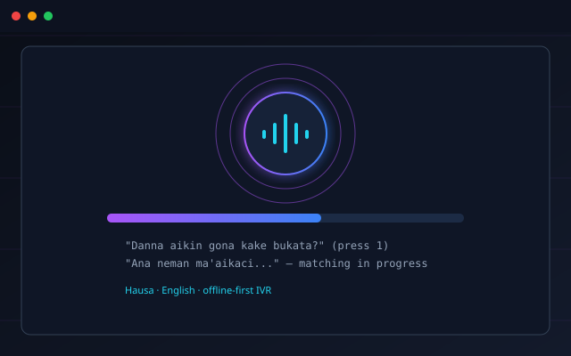

Available for internships & freelance work
Abdulhafiz Nasir
Abdulhafiz Nasir
builds things that ship.
Playmaker
Passionate about building modern web applications, learning cybersecurity, solving problems with technology, and creating innovative digital experiences — one commit at a time.
0+
PROJECTS_BUILT
0+
TECH_STACKS_USED
0
YEARS_LEARNING
0
STARTUP_CO-FOUNDED
SCROLL
01 / About
Studying systems. Building solutions.
A closer look at who's behind the terminal.
Currently
Computer Software Engineering
Katsina State Institute of Technology & Management — National Innovation Diploma
- Frontend development with modern JS frameworks & Tailwind CSS
- Ethical hacking and applied cybersecurity fundamentals
- Linux systems administration and command-line tooling
- AI-assisted development and automation workflows
I'm Abdulhafiz Nasir, known online as Playmaker — a Computer Software Engineering student who treats every project like a puzzle worth solving properly, not just finishing. Most of my time goes into building web applications, but the itch to understand how systems break (and how to defend them) keeps pulling me toward cybersecurity and ethical hacking.
I'm constantly learning — cycling between frontend frameworks, Linux internals, and AI development tools — and I turn what I learn into shipped projects rather than letting it sit in notes. That habit led to co-founding CodeBreakers, a platform built to train the next generation of developers and ethical hackers the way I wish I'd been taught: hands-on, project-first, no fluff.
When I'm not coding, I'm usually experimenting with a new tool, breaking down a vulnerability for my YouTube audience, or sketching the next idea worth building.
02 / Skills
The stack behind the work.
Tools and languages I reach for daily — and the ones I'm actively leveling up.
Frontend
HTML88%
CSS84%
JavaScript78%
Responsive Design82%
Tailwind CSS76%
Programming
Python72%
Java58%
Flutter Basics45%
Tools & Systems
Git & GitHub80%
Linux70%
Kali Linux62%
VS Code90%
Android Dev Tools48%
Backend (Learning)
FastAPI55%
Supabase60%
SQLite65%
Other interests
03 / Projects
Selected work.
A mix of shipped products, in-progress builds, and experiments across web, AI, and security.




04 / Experience
How I got here.
A self-directed path — most of it learned by building, breaking, and rebuilding.
STAGE 01
Learning programming fundamentals
Started with HTML, CSS, and JavaScript, then branched into Python — building small scripts and static pages to understand core logic before reaching for frameworks.
STAGE 02
Building personal projects
Moved from tutorials to original builds: a portfolio site, a student management system, and utility apps — each one adding a new tool to the stack.
STAGE 03
Exploring cybersecurity
Picked up Linux and Kali Linux, studied common attack vectors like SQL injection and RCE, and started applying that lens to secure my own projects.
STAGE 04
Studying software engineering formally
Enrolled in the National Innovation Diploma programme at KSITM, pairing structured coursework with continued independent project work.
STAGE 05
Co-founding CodeBreakers & continuous learning
Co-founded CodeBreakers to teach programming and ethical hacking to others, while continuing to explore AI tooling, backend development, and system architecture.
05 / Education
Formal study, self-directed depth.
Computer Software Engineering
Katsina State Institute of Technology & Management · National Innovation DiplomaCoursework spans software design, systems fundamentals, and hands-on labs — most recently completing a group SIWES industrial training placement covering frontend web development and introductory networking.
Software Design Principles
Data Structures
PC Upgrade & Maintenance
Networking Fundamentals
Frontend Web Development
Systems Documentation (DFDs)
Python Programming
PlannedCybersecurity Fundamentals
PlannedWeb Development
PlannedLinux Administration
Planned
06 / Contact
Let's build something.
Open to internships, freelance work, and collaborations — reach out however's easiest.
EMAIL
hello@playmaker.dev
hello@playmaker.dev
GITHUB
github.com/playmaker
github.com/playmaker
LINKEDIN
linkedin.com/in/playmaker
linkedin.com/in/playmaker
LOCATION
Nigeria
Nigeria